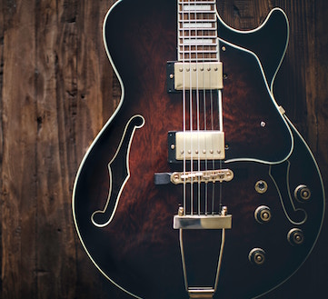

Halloooooo, my name is Andrew and before you explore this amazing website I want to tell you a little bit about myself. I'm and 8th grader at Bancroft Middle School, and as you can see I am in the ATM(That is the only reason you are looking at my website). I love music a lot, my favorite band is Nirvana and my favorite song by them is Turnaround (which is from their compilation album). I love their music a lot because of their quiet than loud music technique. My favorite football team is the Detroit Lions, I always liked being different than my family (sport wise that is), and I really liked their color scheme.
I'm pretty good at playing the guitar, I mainly know Nirvana songs on the guitar because they are my favorite band. I have played the guitar for around 4 years, I hate playing it in front of my family because I don't like getting all the attention from them. I feel as though I am decent at playing the guitar, I am not skilled but I am not bad at it either. I am skilled at playing games (Call of Duty: Black Ops 2 or Black Ops 3), those are my most played games because I have played them since I was young. At my home I have a small farm but the only thing is, I grow pumpkins and zucchini
 Thomas KelleyI am intereseted in a lot of stuff, for example I am interested in getting better on the guitar. I am interested in that because music means a lot to me because it helped me a lot when I was younger. Another thing that I am interested in is learning how to code, I am interested in this because the future is technology and this is giving me a head start. I am interested in going to Lakewood High School because my brother went to that school and a lot of my freinds
Some stuff that I like doing in my free time are playing the guitar, watching tv or listening to music. I like playing the guitar because it is very relaxing and it gives me something to do when I am bored. I I like watch TV because you can almost never get bored of it since there is almost an infinite number of things to watch. Finally, I listen to music almost for the same reason I play the guitar, it relaxes me and it's just a fun thing to do.
I want to tell you about myself. I am 13 years old and I am a student at Bancroft middle school. I have an older brother named Kevin(he is 20 years old) and a sister named Maddy (10 years old) My dad consists of mainly Hispanic and Spanish descent, while on the other hand my mom is from European descent. My brother and Ioften played games together, he's the one that got me into Nirvana and games. But he moved out not that long ago, so now he'll come over sometimes and we will play Call of Duty Zombies